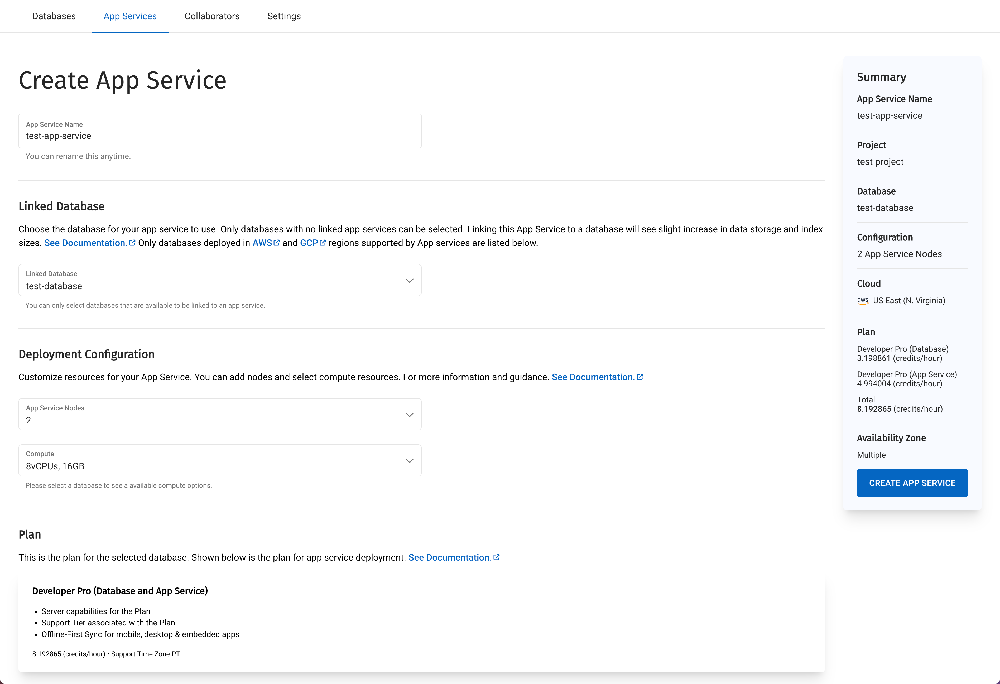

Creating an App Service
Creating an App Service, using the Capella UI
In this section, we’ll show you how to create an App Service for your mobile apps to connect to.
Basics
-
From the main screen, select the App Services tab.
-
Click the +Create App Service button.
Figure 1. Creating an App Service -
Enter a name for the App Service.
-
Choose the database you want to connect to.
App Services are available on AWS, GCP (supported regions), and Azure, for self-service trials. Azure App Services deployments can take average of 15-20 minutes. Deployments on AWS and GCP will take around 5 minutes.
The database you select:
-
MUST have Data, Index, and Query services running
-
MUST have at least one Bucket to connect an App Endpoint to
-
must NOT yet have an App Service linked to it
-
must NOT have XDCR with another Cluster.
You may subsequently enable XDCR on clusters linked with App Services, as long as:
-
you are setting up unidirectional XDCR between the clusters
-
the other cluster does not have App Services linked to it.
-
-
Now click the Create App Service button to instantiate the service.
Deployment Configuration
The provided default should be fine to get you started for development. According to your requirements, you may customize the following parameters:
- Number of nodes
-
between 2 and 12 nodes (default 2)
- Size of each node
-
Choose the size of the node: The options offered vary depending on which cloud service you have chosen for the database.
You can scale an application after it is deployed by changing its configuration.
See Scaling a Deployed App Service for more information.
Service Database Size Implications
When linking App Services to a cluster, bear in mind that App Services will generate some additional sync-related metadata documents during the normal course of its operation. The metadata is stored in the backing server bucket.
In addition to this, when linking App Services to a database, documents that have been deleted (or tombstoned documents) will remain in the bucket for a period of 60 days following the deletion. This will provide the opportunity for disconnected clients to sync down deleted documents via App Services when they come back online anytime within the 60-day partition window.
Linked Database’s Plan
When deploying a new App Service, you are given confirmation of the Plan selected for the linked database. The plan associated with App Services is the same as that of the linked cluster. You can see the additional cost of linking the App Services when you select the node and size in the summary panel (Figure 2).
The summary (on the right of the screen) shows the services costs broken down between the database linked to the App Service and the App Service itself.
The total cost of the deployment is also shown.
Learn more about Billing of App Services.